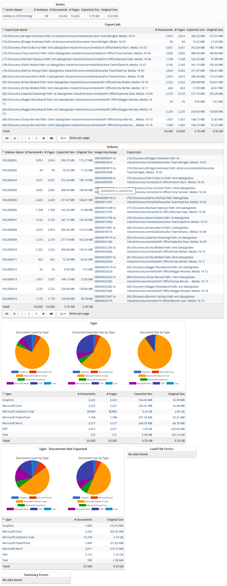

This report provides results of all exports within a series based on Export Jobs and their associated Volumes. Additional information is provided that breaks down the exported documents by sizes and type. Files not exported are also broken down by type along with any error information associated with exports within the series.
Complete the following selections:
Report Title: A report title is selected by default; change the title if needed.
Discovery Job: (Optional) Select the discovery job for which the report is to be generated. If a specific job is not selected, the report will run against the entire case.
